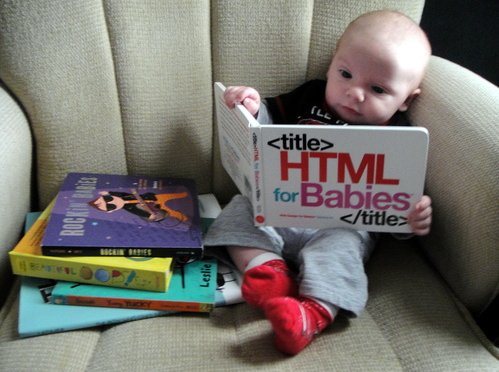
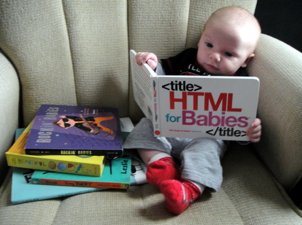

Armpit Resort was an assignment from Intro that my pair and I decided to have fun with it, hopefully no one tried to book a room there.
This was an exercise in adding, committing and pushing.
I have always enjoyed electronics and computers, not only using them, but the inner workings. What makes them do what they do? I currently a student at Epicodus. I am a huge Oregon Ducks fanatic! Fitness and Personal Growth are a must, however even more than that I'm all about helping those around me.I curreently hold certificates in Fitness and Nutrition, Personal Training, and Sports Therapy Level 3. I have done many different types of employment ranging from Personal Trainer, Line Cook, and Chef. Last Position was Sales Manager for a Kirby vacuum distributor.